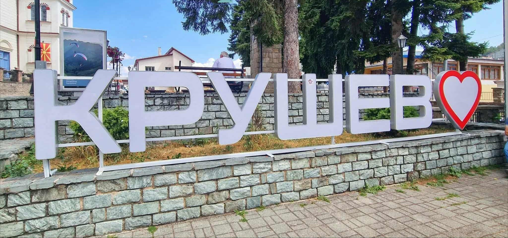

Градот Крушево се простира на југозападниот дел од Република Македонија. Во рамките на општината, градот Крушево има централна местоположба и претставува административен, економски и културен центар на оппштината. Тој се наоѓа на надморска височина од 1250 м. со што претставува највисок град на Балканот.
Општината Крушево е сместена во претежно ридско - планинско подрачје на надморска височина од 600 до 1800 м. Тоа што го прави посебен овој град се многу работи. Почнувајќи од чистиот воздух и околина, од личните културни и природни знаменитости, манифестациите, храната, црквите и манастирите и многу други работи, а не треба да се заборави дека ова е градот на најпознатата музичка ѕвезда Тоше Проески.
Градот има преубава староградска архитектура. Познат е како град - музеј бидејќи е еден од градовите во Македонија со најмногу музеи. Покрај културните и природните знаменитости, може да се посетат и некои културни активности што се одржуваат во градот и некои авантуристички спортови. Такви се натпреварите во парагвајдерство, манифестацијата "10 дена Крушевска Република", ролер-ски купот "Тоше Проески", "Крушево низ Корија" и други.
